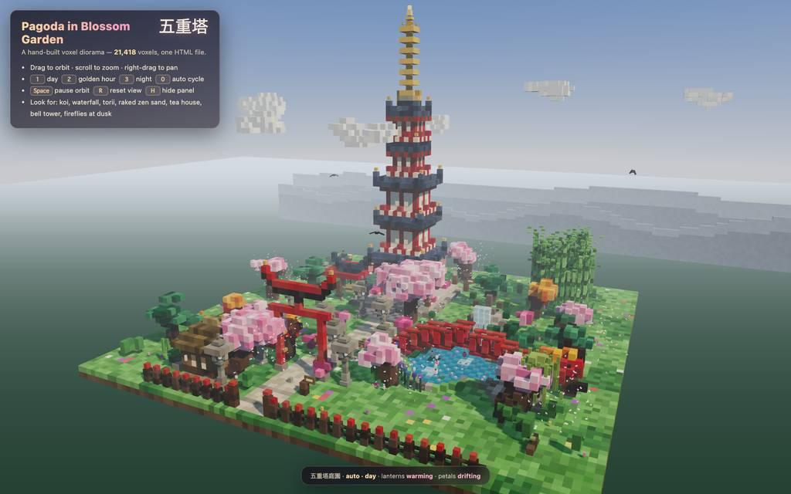
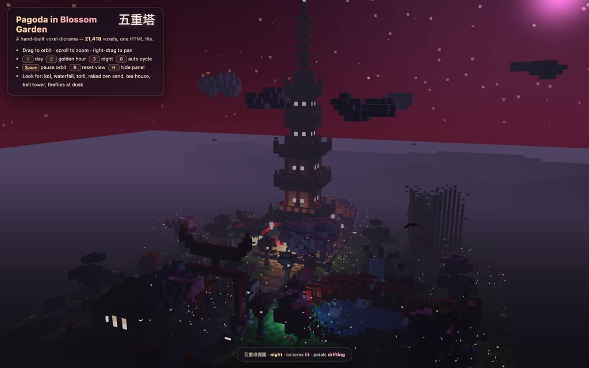
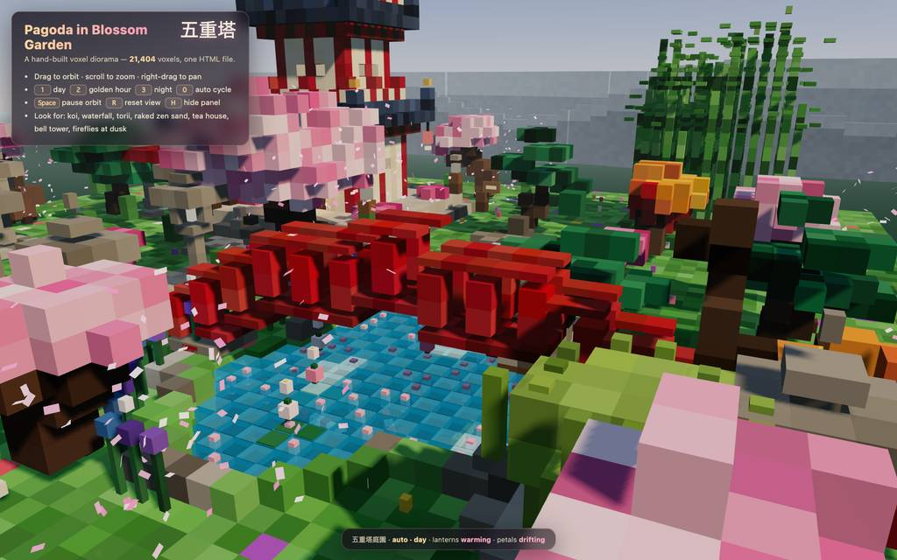
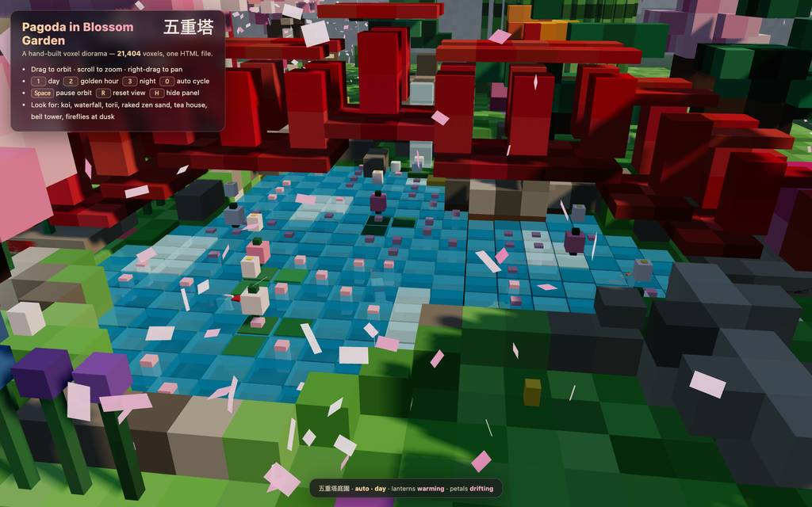
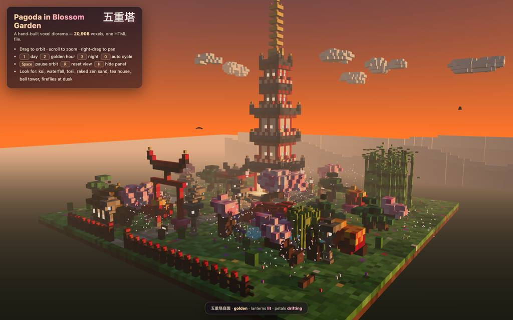
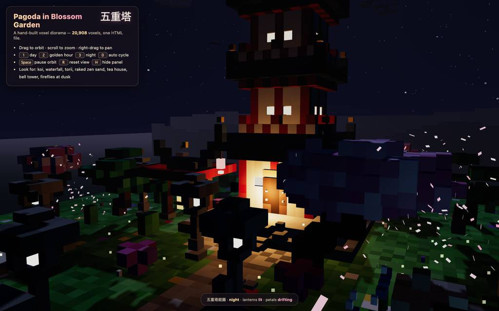

runs / 2026-10-20 / 024054-969000-baseline-0c2da471
トークン上限で分割書作に転換、50分で21000体素の五重塔庭園HTML完成
qwen3.8-flash-next-unsloth-ud-q4_k_xl（thinking high）がボクセル五重塔庭園を単一HTML化する依頼を3026.4秒・72コールで完走（status completed、exit 0）。初稿#3で出力トークン上限に当たり分割書きに切り替え、以後は連結・構文検査とヘッドレスブラウザでの截图検証を繰り返して細部を修正した。最終成果物は pagoda-garden.html（49,126 バイト）で、最終報告はコンソールエラー0・120fps を検証済みとしている。
成果物
work/pagoda-garden.html（49,126 バイト）をそのまま同梱している。重いシーンもあるため、必要なときだけ起動する。
pagoda-garden.html
48 KB · 起動するまで読み込まない












全 20 枚から等間隔に 12 枚を選んでいる。logs/events.jsonl の画像ブロックを内容ハッシュで重複排除して時系列に並べた、制作中の検証用スクリーンショット。最終版とは限らない。
成果物の構成
| 要素 | 内容 |
|---|---|
| 五重塔 | 石壇・二重階段、赤柱とクリーム壁、金斗拱の扉と内陣の光背、上層の欄干、反り上がって金帽を載せた五つの瓦屋根、しゃちほこ、七輪の金色相輪、軒下の提灯、狛犬と香炉。 |
| 鯉池 | 波打ちと煌めきのある半透明の水面、楕円巡回の4匹の鯉（紅白・赤・金）、蓮の葉と花、浮いた花弁、石縁、菖蒲と苔岩、小島の矮松。 |
| 滝 | 暗い岩割りを伝う三層の細い水シート、泡飛沫、受けの石。 |
| 橋と鳥居 | 池にかかるアーチの赤橋、曲がり笠木の鳥居、砂利と石板の曲道、縁石、黄昏時に火袋が灯る石灯籠8基。 |
| 樹木 | 桜8本（大樹2つは複合房）、雲型に刈り込んだ松4、高度で橙→紅に色分かる楓4、枝垂柳、60本超の節竹からなる竹藪。 |
| 禅庭と茶室 | 苔石を巻く同心円の砂紋と外周縁石の枯山水、格子窓が灯る茅葺茶室（ engawa・蹲踞・ししおどし）、釣鐘と撞木のある鐘楼。 |
| 動的要素 | 樹冠から発生し池を渡る風驱动の花弁800、移動影を落とす雲6群、羽ばたきで旋回する鳥、夜に昇る蛍、霧の向こうの雪冠岩稜。 |
| 昼夜サイクル | カスタムスカイシェーダ（勾配・日月・瞬星）と day/golden/dusk/night/dawn の5キーフレームで霧・太陽色・露光・灯の発光を連動させる。 |
| 技術構成 | 単一HTML 49KB、約21,000体素の手置き、Three.js は unpkg の three@0.169 を import map 経由（要ネット接続）。 |
| 検証結果 | ヘッドレス Chromium でコンソールエラー0、2048px シェーダマップで120fps、全時刻ストップを確認と最終報告に記載。 |
モデルの最終メッセージから読み取った内容。コードの確認はしていない。
タイムライン
72 回の API 呼び出しを時間順に並べた。上段の帯の幅が各呼び出しの所要時間で、帯の間の空白がツールの実行時間。下段はその時点のコンテキスト長。
最も長い 2 回の生成（#3 633 秒・#2 511 秒）で 1144.8 秒、壁時計の 37.9%。出力トークンの上位 4 回（#3・#2・#1・#14）で全体の 59.2%（85,786 / 144,852）。推論以外（ツール実行など）は約 97 秒（3%）。
フェーズ別の内訳
| フェーズ | 経過 | 所要 | 全体に占める割合 | 呼び出し | 出力 tok | 何をしたか |
|---|---|---|---|---|---|---|
| 初稿試行 | 0:00–25:11 | 1511 秒 | 50.0% | 4 | 80,876 | 作業ディレクトリ確認とブラウザツールのドキュメント読解後、#2–#3でHTML全体を書こうとしたが、#3が出力32,768トークンで上限に当たり書きが切れた（E1）。#4からチャンク分割書きに転換。 |
| 分割記述 | 25:11–34:47 | 576 秒 | 19.0% | 11 | 31,746 | 切損した箇所を#5–#7で修復し、chunk 1–4（UI/地形・塔/構造・樹木/空・ループ）を分割記述。#9–#11で塔関数の境界を探り、#12–#13で窓・扉・欄干の配置を修正した版に書き直した。 |
| 連結と初検証 | 34:47–35:44 | 57 秒 | 1.9% | 10 | 2,206 | parts を連結してモジュール構文を検査し、W_H の誤字や屋根隅の浮き（#18–#20）を修正。#21–#23でサーバ起動が失敗し（E3–E5）、#24で作業ディレクトリを配信し直して#25で初スクリーンショット取得に成功。 |
| ブラウザ反復修正 | 35:44–42:06 | 382 秒 | 12.6% | 16 | 15,425 | リロードして昼・西・夜のビューを撮り、塔の比率・樹木・雲・鯉を調整（E7 は edit 却下の再試行）。#34で timeState を公開して時刻を強制し、星・月ハロー・夜間輝度・水面発光を修正して検証した。 |
| 細部作り込み | 42:06–47:31 | 325 秒 | 10.7% | 16 | 9,011 | 滝を暗岩上の細い三層シートへ再構築、山稜に z 揺らぎを追加。橋の欄干・床板と鯉の深さを複数回作り直し（E9–E11）、夕暮れの輝度と池灯位置を調整し、golden/dusk/night の確定 shot で締めた。 |
| ファイル回収 | 47:31–49:02 | 91 秒 | 3.0% | 10 | 3,411 | デバッグ用フックの行を特定し、#60で bad-path 探针（E12 の構文エラー）で手法を確認後、#61でライブ DOM から最終 HTML を回収、#62–#63で完全性と反映を検証。#66–#67で夜間の接写を再取得（E13）。 |
| 掃除と最終確認 | 49:02–50:24 | 82 秒 | 2.7% | 5 | 2,177 | timeState デバッグ行を除去し、最終ファイルでキーボード操作と FPS を検証。テスト副産物を削除しローカルサーバを停止して終了した。 |
フェーズの切れ目は、ログから読み取れる作業内容の変わり目（LLM による区切り）。所要時間は、そのフェーズの最初の呼び出しの開始から次のフェーズの最初の呼び出しの開始まで。
72 回の呼び出しを表で見る
| # | 種別 | フェーズ | 開始 | 所要 秒 | prompt | うち cache | 出力 | tok/s | HTTP | ツール |
|---|---|---|---|---|---|---|---|---|---|---|
| 1 | 主ループ | 初稿試行 | 0:00 | 287.9 | 7,805 | 7,624 | 14,207 | 49.5 | 200 | bash + read |
| 2 | 主ループ | 初稿試行 | 4:48 | 511.4 | 25,113 | 7,800 | 29,320 | 58.2 | 200 | write |
| 3 | 主ループ | 初稿試行 | 13:20 | 633.4 | 54,474 | 25,108 | 32,768 | 53.3 | 200 | write |
| 4 | 主ループ | 初稿試行 | 23:53 | 78.2 | 71,215 | 70,875 | 4,581 | 59.7 | 200 | write |
| 5 | 主ループ | 分割記述 | 25:11 | 5.1 | 75,836 | 75,798 | 193 | 44.9 | 200 | edit |
| 6 | 主ループ | 分割記述 | 25:17 | 5.7 | 76,519 | 76,031 | 229 | 50.5 | 200 | read |
| 7 | 主ループ | 分割記述 | 25:22 | 3.4 | 77,563 | 76,748 | 117 | 58.8 | 200 | edit |
| 8 | 主ループ | 分割記述 | 25:26 | 96.1 | 78,276 | 77,682 | 5,634 | 59.4 | 200 | write |
| 9 | 主ループ | 分割記述 | 27:02 | 52.9 | 83,949 | 78,271 | 2,445 | 48.9 | 200 | read |
| 10 | 主ループ | 分割記述 | 27:55 | 5.3 | 87,147 | 86,394 | 206 | 51.7 | 200 | read |
| 11 | 主ループ | 分割記述 | 28:00 | 8.2 | 87,961 | 87,355 | 332 | 47.6 | 200 | read |
| 12 | 主ループ | 分割記述 | 28:09 | 91.4 | 88,982 | 88,294 | 4,948 | 54.9 | 200 | edit |
| 13 | 主ループ | 分割記述 | 29:40 | 49.6 | 95,633 | 93,932 | 2,890 | 60.5 | 200 | edit |
| 14 | 主ループ | 分割記述 | 30:30 | 165.6 | 100,470 | 98,527 | 9,491 | 58.0 | 200 | write |
| 15 | 主ループ | 分割記述 | 33:15 | 91.9 | 110,003 | 109,963 | 5,261 | 57.7 | 200 | write |
| 16 | 主ループ | 連結と初検証 | 34:47 | 7.8 | 115,306 | 115,266 | 362 | 50.8 | 200 | bash |
| 17 | 主ループ | 連結と初検証 | 34:55 | 4.6 | 115,691 | 115,667 | 233 | 56.2 | 200 | bash |
| 18 | 主ループ | 連結と初検証 | 35:00 | 3.4 | 115,967 | 115,923 | 129 | 47.5 | 200 | read |
| 19 | 主ループ | 連結と初検証 | 35:03 | 3.1 | 116,457 | 116,096 | 104 | 53.1 | 200 | grep |
| 20 | 主ループ | 連結と初検証 | 35:06 | 10.4 | 116,979 | 116,563 | 479 | 52.0 | 200 | edit |
| 21 | 主ループ | 連結と初検証 | 35:17 | 5.3 | 117,908 | 117,460 | 206 | 50.3 | 200 | bash |
| 22 | 主ループ | 連結と初検証 | 35:22 | 4.6 | 118,144 | 118,116 | 238 | 59.4 | 200 | eval |
| 23 | 主ループ | 連結と初検証 | 35:27 | 2.6 | 118,466 | 118,382 | 97 | 50.1 | 200 | read |
| 24 | 主ループ | 連結と初検証 | 35:30 | 3.0 | 118,587 | 118,563 | 135 | 54.0 | 200 | bash |
| 25 | 主ループ | 連結と初検証 | 35:33 | 5.0 | 118,790 | 118,721 | 223 | 56.8 | 200 | eval |
| 26 | 主ループ | ブラウザ反復修正 | 35:44 | 76.1 | 119,875 | 119,015 | 3,626 | 48.7 | 200 | grep |
| 27 | 主ループ | ブラウザ反復修正 | 37:00 | 18.0 | 124,508 | 123,500 | 808 | 49.4 | 200 | grep |
| 28 | 主ループ | ブラウザ反復修正 | 37:19 | 9.2 | 125,445 | 125,316 | 477 | 57.3 | 200 | edit |
| 29 | 主ループ | ブラウザ反復修正 | 37:28 | 17.7 | 127,008 | 125,922 | 845 | 53.1 | 200 | eval |
| 30 | 主ループ | ブラウザ反復修正 | 37:50 | 46.1 | 128,777 | 127,852 | 2,056 | 46.4 | 200 | grep |
| 31 | 主ループ | ブラウザ反復修正 | 38:36 | 23.5 | 131,996 | 130,832 | 1,166 | 53.8 | 200 | edit |
| 32 | 主ループ | ブラウザ反復修正 | 39:00 | 13.1 | 133,322 | 133,164 | 692 | 56.8 | 200 | edit |
| 33 | 主ループ | ブラウザ反復修正 | 39:13 | 4.6 | 135,492 | 134,018 | 123 | 46.4 | 200 | grep |
| 34 | 主ループ | ブラウザ反復修正 | 39:18 | 3.6 | 135,812 | 135,614 | 132 | 51.4 | 200 | edit |
| 35 | 主ループ | ブラウザ反復修正 | 39:21 | 8.7 | 136,118 | 135,945 | 450 | 58.3 | 200 | eval |
| 36 | 主ループ | ブラウザ反復修正 | 39:35 | 21.1 | 137,486 | 136,568 | 969 | 49.8 | 200 | eval |
| 37 | 主ループ | ブラウザ反復修正 | 40:02 | 54.5 | 140,002 | 78,271 | 1,365 | 47.5 | 200 | grep |
| 38 | 主ループ | ブラウザ反復修正 | 40:57 | 20.7 | 142,261 | 141,367 | 1,026 | 53.3 | 200 | edit |
| 39 | 主ループ | ブラウザ反復修正 | 41:18 | 12.3 | 144,259 | 143,287 | 457 | 42.3 | 200 | grep |
| 40 | 主ループ | ブラウザ反復修正 | 41:30 | 7.6 | 144,970 | 144,716 | 348 | 54.1 | 200 | edit |
| 41 | 主ループ | ブラウザ反復修正 | 41:38 | 18.4 | 145,765 | 145,319 | 885 | 51.6 | 200 | eval |
| 42 | 主ループ | 細部作り込み | 42:06 | 56.6 | 146,950 | 70,875 | 1,196 | 45.8 | 200 | read |
| 43 | 主ループ | 細部作り込み | 43:03 | 28.8 | 148,891 | 148,147 | 1,481 | 54.1 | 200 | edit |
| 44 | 主ループ | 細部作り込み | 43:32 | 5.2 | 150,590 | 150,371 | 184 | 45.4 | 200 | grep |
| 45 | 主ループ | 細部作り込み | 43:37 | 7.9 | 151,081 | 150,774 | 380 | 55.9 | 200 | edit |
| 46 | 主ループ | 細部作り込み | 43:45 | 11.5 | 151,831 | 151,464 | 528 | 51.3 | 200 | eval |
| 47 | 主ループ | 細部作り込み | 44:06 | 82.3 | 152,539 | 7,624 | 1,288 | 48.7 | 200 | edit |
| 48 | 主ループ | 細部作り込み | 45:28 | 4.6 | 154,049 | 152,534 | 108 | 47.6 | 200 | read |
| 49 | 主ループ | 細部作り込み | 45:33 | 8.7 | 154,925 | 154,156 | 381 | 52.1 | 200 | edit |
| 50 | 主ループ | 細部作り込み | 45:41 | 7.2 | 155,442 | 155,307 | 319 | 52.1 | 200 | edit |
| 51 | 主ループ | 細部作り込み | 45:49 | 4.3 | 156,074 | 155,762 | 159 | 49.6 | 200 | grep |
| 52 | 主ループ | 細部作り込み | 45:53 | 5.1 | 156,379 | 156,232 | 210 | 49.8 | 200 | edit |
| 53 | 主ループ | 細部作り込み | 45:58 | 11.5 | 156,750 | 156,590 | 551 | 52.1 | 200 | eval |
| 54 | 主ループ | 細部作り込み | 46:19 | 40.7 | 157,564 | 122,824 | 1,214 | 47.8 | 200 | edit |
| 55 | 主ループ | 細部作り込み | 47:00 | 2.5 | 158,901 | 158,781 | 88 | 54.0 | 200 | grep |
| 56 | 主ループ | 細部作り込み | 47:03 | 9.4 | 159,850 | 158,989 | 407 | 51.5 | 200 | edit |
| 57 | 主ループ | 細部作り込み | 47:12 | 11.0 | 161,225 | 160,260 | 517 | 55.6 | 200 | eval |
| 58 | 主ループ | ファイル回収 | 47:31 | 19.4 | 162,005 | 145,864 | 501 | 45.0 | 200 | bash |
| 59 | 主ループ | ファイル回収 | 47:51 | 3.1 | 162,547 | 162,507 | 116 | 48.8 | 200 | edit |
| 60 | 主ループ | ファイル回収 | 47:54 | 19.1 | 162,684 | 162,664 | 892 | 47.9 | 200 | eval |
| 61 | 主ループ | ファイル回収 | 48:13 | 10.0 | 163,869 | 163,578 | 467 | 51.7 | 200 | eval |
| 62 | 主ループ | ファイル回収 | 48:23 | 5.6 | 164,356 | 164,338 | 265 | 51.7 | 200 | bash |
| 63 | 主ループ | ファイル回収 | 48:29 | 3.3 | 164,692 | 164,622 | 130 | 49.8 | 200 | grep |
| 64 | 主ループ | ファイル回収 | 48:32 | 5.8 | 165,418 | 164,824 | 216 | 48.8 | 200 | bash |
| 65 | 主ループ | ファイル回収 | 48:38 | 2.9 | 165,675 | 165,634 | 106 | 49.5 | 200 | read |
| 66 | 主ループ | ファイル回収 | 48:41 | 7.9 | 166,066 | 165,783 | 366 | 53.8 | 200 | eval |
| 67 | 主ループ | ファイル回収 | 48:49 | 7.0 | 166,625 | 166,431 | 352 | 60.7 | 200 | eval |
| 68 | 主ループ | 掃除と最終確認 | 49:02 | 16.9 | 167,207 | 145,864 | 327 | 45.7 | 200 | edit |
| 69 | 主ループ | 掃除と最終確認 | 49:19 | 9.9 | 167,791 | 167,534 | 452 | 54.0 | 200 | eval |
| 70 | 主ループ | 掃除と最終確認 | 49:42 | 18.7 | 168,353 | 145,864 | 415 | 46.6 | 200 | eval |
| 71 | 主ループ | 掃除と最終確認 | 50:03 | 4.3 | 168,790 | 168,770 | 190 | 48.5 | 200 | bash + write |
| 72 | 主ループ | 掃除と最終確認 | 50:08 | 16.2 | 169,112 | 168,979 | 793 | 51.5 | 200 |
試行錯誤
ツールがエラー（isError）を返した結果の一覧。ツールは成功したのにモデル自身が内容を壊したケースは、ここには出ない。
エラーとして記録された 13 件
| 経過 | ツール | 起きたこと | 分類 |
|---|---|---|---|
| 23:53 | write | #3 の write が上限32,768トークンに当たり引数完成前に切れて実行不能となった。Tool call was not executed because the assistant hit its output token limit (stop_reason: length) before the arguments could complete; the recorded arguments are truncated and unsafe to run. Do NOT re | 出力切損 |
| 29:40 | edit | #12 の edit が未表示行を anchor にしていて却下され、#13でブロックごと書き直した。This edit anchors to lines 112, 130-157, 176-178, 180-186 of ~ that [~ | edit却下 |
| 35:22 | bash | #21 の bash が service モードで async/timeout を使い、ready.timeout を使うよう拒否された。Service mode does not accept async or timeout; use ready.timeout for readiness. | サービス誤用 |
| 35:27 | eval | #22 の eval が未起動サーバへ接続し ERR_CONNECTION_REFUSED となった。Error: net::ERR_CONNECTION_REFUSED at http://127.0.0.1:8642/pagoda-garden.html at L (/$bunfs/root/chunks/cli-9dftvayj.js:11554:41) Command exited with code 1 | 接続拒否 |
| 35:30 | read | #23 の read が garden-server ジョブを見つけられなかった。Background job or service not found: garden-server | リソース不在 |
| 37:45 | eval | #29 の eval は截图撮影自体に成功し、1024x640 と 1800x1125 の座標倍率の注記が付いてエラー枠で返った。Screenshot captured Format: image/jpeg (73.44 KB) Dimensions: 1024x640 [Image: original 1800x1125 at capture scale 1.25, displayed at 1024x640. Multiply image coordinates by 1.41 to get viewport CSS p | スクショ注記 |
| 39:00 | edit | #31 の edit が 413 行目の実内容不一致で却下され、#32で再試行した。This edit anchors to lines 413 of pagoda-garden.html that [pagoda-garden.html#3DD3] never displayed (it showed a partial range, a search hit, or a folded summary). Actual file content at those lines: | edit却下 |
| 39:30 | eval | #35 の eval も截图成功＋座標スケーリング注記がエラー枠で返った。Screenshot captured Format: image/jpeg (62.65 KB) Dimensions: 1024x640 [Image: original 1800x1125 at capture scale 1.25, displayed at 1024x640. Multiply image coordinates by 1.41 to get viewport CSS p | スクショ注記 |
| 45:28 | edit | #47 の edit が未表示行を anchor にして却下され、#48で read 後に再試行した。This edit anchors to lines 394, 397-398 of pagoda-garden.html that [pagoda-garden.html#D3F5] never displayed (it showed a partial range, a search hit, or a folded summary). Actual file content at thos | edit却下 |
| 45:41 | edit | #49 の edit が 597 行目の不一致で却下され、#50で作り直した。This edit anchors to lines 597 of pagoda-garden.html that [pagoda-garden.html#D3F5] never displayed (it showed a partial range, a search hit, or a folded summary). Actual file content at those lines: | edit却下 |
| 47:00 | edit | #54 の edit が 639 行目の不一致で却下され、#55の grep 後に#56で再適用した。This edit anchors to lines 639 of pagoda-garden.html that [pagoda-garden.html#549B] never displayed (it showed a partial range, a search hit, or a folded summary). Actual file content at those lines: | edit却下 |
| 48:13 | eval | #60 の意図的な bad-path 探针で eval が SyntaxError（line 7）となり、DOM 回収法の実効を確認した。SyntaxError: Unexpected token (line 7, column 132) 5 | const full = "<!DOCTYPE html>\n" + dom + "\n"; 6 | const fs = require("fs"); 7 | …eSync("~", "x").?; | | 構文エラー |
| 48:49 | eval | #66 の eval が language 欠落でバリデーション失敗し、#67で夜間接写を取り直した。Validation failed for tool "eval": - language: language must be "py": Python with IPython-style magics (not IPython); "js": Bun (was missing) Received arguments: { "code": "const tab = await browser.t | パラメタ欠落 |
経過は、そのツールを呼んだターンの終了時刻。エラー本文は先頭 300 文字までで、パスや接続先は伏せてある。
気づいた点
計測データ（呼び出し一覧・エラー・最終メッセージ）だけから LLM が書いた読み取り。文中の数値は、上の KPI や表と照らして確認する。
序盤4コールでトークン半分
#1–#3 で 76,295 トークン（総量 144,852 の約53%）を使い、うち #3 は 32,768 ちょうどで上限到達（E1）。#1–#4 までで 800 秒・総経過の26%を占め、以後の68コールは修正・検証中心の短命コール（中央値数秒台）になった。
edit却下をgrep/readで解消
13件のエラーのうち5件（E2/E7/E9/E10/E11）が「anchor 行が未表示・不一致」の edit 却下。毎回直後に grep（計11回）や read（計10回）で正確な行を特定してから再 edit しており、edit 21回が最多ツール。
初回検証までサーバ難
#21–#23 でパラメタ誤用・接続拒否・ジョブ名不一致（E3–E5）が連続し、#24 の bash 配信起動で解決、#25 で初スクショ。以降 #29–#70 で eval 15回・截图20枚の検証ループに移行した。
最終ファイルはDOM回収品
ディスク上のファイルの最終形が不確実になったため、#60で探针（E12）後に#61でライブ DOM から HTML を回収し、#62 で完全性、#63 で dusk 値の反映を grep 確認。成果物 49,126 バイトはこの回収後にデバッグ除去（#68）を経た版。
検証のためtimeStateを仮設
#34 で時刻制御用の timeState を公開し、#35–#36 の昼・西・夜 shot と FPS 計測に使用。#58 で対象行を洗い出し、#68 で除去後、#69–#70 で本来のキーボード操作と FPS を再確認して仕上げている。
入力と設定
Design and create a very creative, elaborate, and detailed voxel art scene of a pagoda in a beautiful garden with trees, including some cherry blossoms. Make the scene impressive and varied and use colorful voxels. Add as many details as possible to showcase your attention to them. Use whatever libraries to get this done but make sure I can paste it all into a single HTML file.
input/prompt.md の全文。SHA-256 は ceece4685b37…。
| omp の起動オプション | --print --mode json --thinking high --no-title --approval-mode yolo |
| upstream | （接続先は伏せている） |
| タイムアウト | 10,800 秒 |
config/00-omp.yml
setupVersion: 2 autolearn: enabled: false autoContinue: false